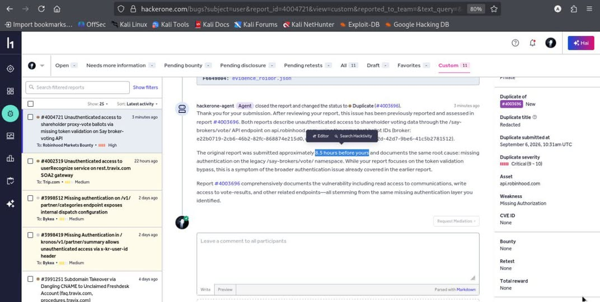

IDOR — Broken Authentication on Communication Endpoints
Business-logic flaw · horizontal privilege escalation · PII disclosure
summary
An Insecure Direct Object Reference combined with a broken business-logic check exposed other customers' sensitive data. The "access token" in the request was format-checked only — never actually tied to the authenticated user's record.
discovery chain
- Recon. Downloaded every JS bundle on the target subdomains, hunting for API endpoints, base URLs, tokens, and query parameters.
- Signal. The JavaScript revealed a backend base URL. Frontend requests carried
?n=<uuid>andnt— described in-app as access tokens for the data. - Hypothesis. Is
nvalidated server-side, or merely required to look like a UUID? - Proof. Requests with no token, an all-zero UUID, and a random UUID all returned
200 OKwith full data. A non-UUID value returned400 "Unable to validate communication."— format-only validation. - Escalation. Reusing the same token against a different communication ID returned another customer's record — no valid token or auth required.
impact
Sensitive PII exposed cross-customer: customer names, holdings, a masked account identifier, and a full voting record — accessible with no authentication. Horizontal access is a proven primitive.
recommendation
Bind every token to the owning record and the authenticated user server-side, and authorize each object access against the session identity. Format validation is not authorization.

200 OK# 1 — no token
GET /api/communication?mid=0000...
HTTP/1.1 200 OK
{ "customer": "...", "holdings": "...",
"voting_record": [ ... ] }
# 2 — invalid uuid → still OK
GET /api/communication?n=00000000-0000-0000-0000-000000000000
HTTP/1.1 200 OK
# 3 — non-uuid → rejected (format only)
GET /api/communication?n=not-a-uuid
HTTP/1.1 400 "Unable to validate communication."